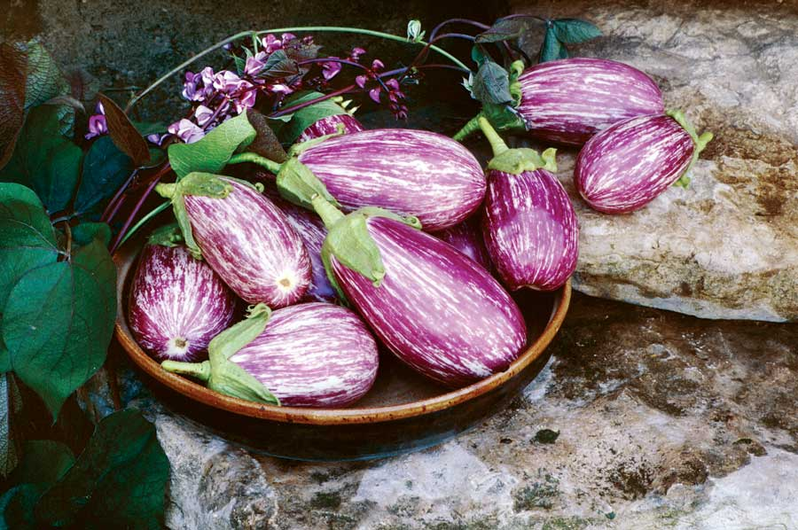

In their 2009 yearbook, Seed Savers Exchange members offered an astonishing 133 varieties of eggplant - including fruits from Japan, Mexico and Thailand. The Italian heirloom above, ‘Listada de Gandia,’ was introduced to southern France during the early 1850s, and is a beautiful cross of a purple and a white variety. The Exchange has been growing several strains of this eggplant, and has selected this particular strain because it offers the best color and quality.
EGGPLANT PARMESAN GRATIN
Ingredients:
1 pound eggplant
3 tbsp olive oil
1 tbsp salt
2 heirloom tomatoes, sliced 1/4-inch thick, or 1 can tomatoes (with most of the juice removed)
1 tsp oregano
1 tsp basil
1/2 tsp pepper
1/2 cup shredded mozzarella
3/4 cup fresh breadcrumbs
1 tbsp butter
Instructions:
Preheat oven to 425 degrees Fahrenheit. Remove several strips of skin from the eggplant and cut into 2-inch cubes. Toss eggplant with oil and salt to coat. Spread cubes out on a lined bakery sheet and place in oven. Bake for approximately 20 to 25 minutes, stirring until cooked through and browned. Reduce heat to 350 degrees. Place half of the eggplant in a buttered dish. Arrange tomato slices or canned tomatoes on top of eggplant. Sprinkle with herbs, pepper and a little salt if needed. Cover tomatoes with remaining eggplant, followed by the cheese, and finally sprinkle with breadcrumbs and dot with the butter. Bake gratin for 20 minutes at 350 degrees, until cheese is melted and the breadcrumbs are golden brown. Serves 6.
|
 ROSALIND CREASY This harvest of ‘Listada de Gandia’ eggplant was grown at Seed Savers Exchange’s Heritage Farm, and the striking fruits make a beautiful table centerpiece. |
|
|